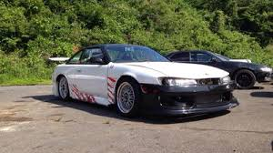
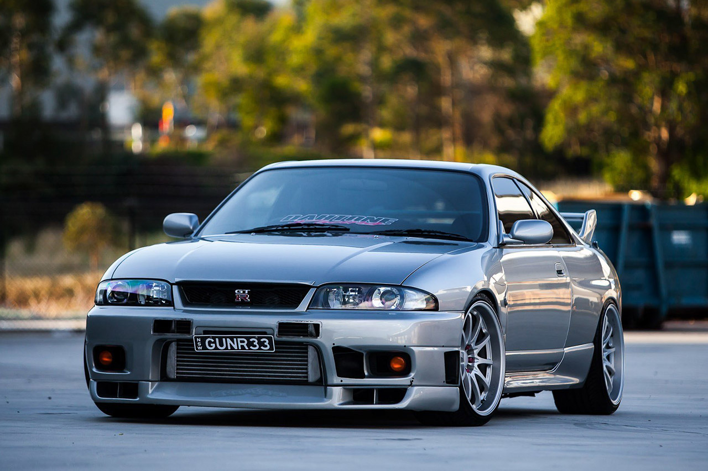
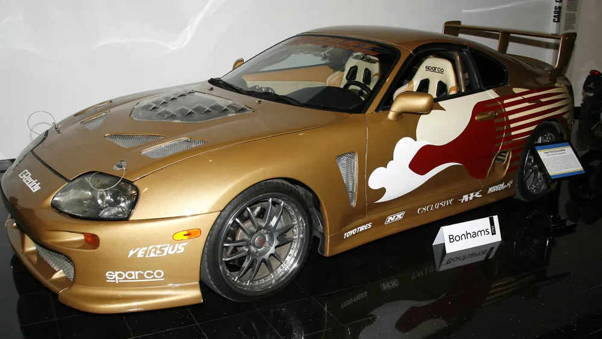

The 1990s are widely regarded as the golden age of JDM cars, a time when Japanese manufacturers reached new heights in design, performance, and innovation. The automotive landscape of this era was dominated by vehicles that combined technological sophistication with aggressive styling and unmatched tunability. Manufacturers pushed the boundaries of what was possible for production cars, leading to the creation of now-legendary models. The Nissan Skyline GT-R, particularly the R32, R33, and R34 generations, stood at the forefront, earning the nickname "Godzilla" for its dominance on the racetrack. With its ATTESA E-TS all-wheel-drive system and the twin-turbocharged RB26DETT engine, the GT-R demonstrated the technological prowess that Japan had cultivated. Alongside it, the Toyota Supra MK4 (A80) emerged as a tuning icon, with its bulletproof 2JZ-GTE engine capable of handling immense power upgrades, helping it gain a cult following among car enthusiasts worldwide.

This period also saw the rise of other significant performance machines that became cultural phenomena. Mazda's RX-7 FD offered a lightweight, rear-wheel-drive platform powered by a unique twin-rotor rotary engine, known for its balance and handling. The Mitsubishi Lancer Evolution and Subaru Impreza WRX STI brought rally-bred technology to the streets, with turbocharged powerplants and advanced all-wheel-drive systems that made them formidable in both motorsport and everyday driving. These cars weren’t just fast—they were technologically advanced and incredibly responsive, winning over drivers who wanted precision and raw excitement. Manufacturers were not afraid to innovate, and the result was a generation of vehicles that were as competitive on the track as they were thrilling on public roads. The mix of turbocharging, lightweight materials, and precise handling created a blueprint that still inspires car makers today.

Cultural influence played a critical role in propelling JDM cars to global stardom during this time. Japanese car culture expanded rapidly, with motorsports such as touring car championships, rally events, and street racing becoming essential to the JDM identity. Internationally, the influence of anime like *Initial D* and Hollywood films like *The Fast and the Furious* introduced JDM cars and the surrounding tuner culture to a much wider audience. The explosion of aftermarket tuning further fueled this movement, with parts, modifications, and car clubs spreading rapidly. Whether through drifting competitions, dyno runs, or underground racing scenes, JDM cars represented freedom, individuality, and rebellion. By the early 2000s, these machines had not only dominated performance metrics but had also cemented their legacy in the hearts of enthusiasts across the globe.